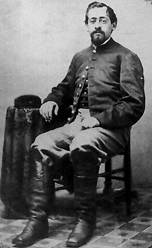

|

NAME: Luther Franklin Remington
BORN: 1841
DIED: 1893
ALLEGIANCE: Union
HIGHEST RANK: Sergeant
UNIT: 21st New York Cavalry (Griswold Light Cavalry)
RECORD: Enlisted December 10, 1863. Promoted to
corporal July 1864, to sergeant January 1865. Fought in 24
battles and engagements in the Shenandoah Valley, including
at New Market, Lynchburg, Purcellville, and Winchester.
Assigned to Fort Collins, Colorado Territory, September
1865. Mustered out June 26, 1866, in Denver, Colorado
Territory.
|
|
It was not every Civil War soldier who could boast that the
weapons he wielded were named for his family. When Luther
Franklin Remington enlisted in the 21st New York Cavalry, he
received two Model 1858 .44-caliber Remington revolvers,
manufactured by the company his distant cousin, Eliphailet
Remington, had founded. The revolvers served Remington well
both during and after the Civil War. The 21st New York
Cavalry, also known as the Griswold Light Cavalry, after
Congressman John Griswold, was formed from companies raised
in four New York counties. Remington enlisted in Company L
in December 1863.
As part of the Army of the Shenandoah, Remington and his
unit fought in two dozen battles and engagements in
Virginia's Shenandoah Valley over the course of two years,
including fights at New Market, Lynchburg, Purcellville,
Winchester, and Cedarville. According to Remington's diary,
Confederate partisan ranger John S. Mosby and his guerrillas
repeatedly harassed the 21st New York. Mosby paid tribute to
Remington's unit when he said he "could run any regiment in
the valley from one end to the other except one, the New
York 21st."
Remington was promoted to corporal in July 1864 and to
sergeant in January 1865. After marching in the Grand Review
of the Armies in Washington, D.C., at war's end, Remington
traveled with the 21st New York to Fort Leavenworth, Kansas.
A dusty, 600-mile horseback trek across the prairie took him
to Fort Collins in the Colorado Territory, where he and his
unit were assigned to protect wagon trains and stagecoaches
from Indian attacks. Remington's diary reveals that the year
he spent at Fort Collins was uneventful except for
occasional baseball games. Another cousin, celebrated artist
Frederic Remington, would find his travels to the American
West to be more productive.
On June 26, 1866, the 21st New York became the last
volunteer regiment from the Civil War to muster out of
service. As a memento of his time with the cavalry,
Remington sat for this portrait in Denver, where he mustered
out. He traveled as far a Omaha, Nebraska, by covered wagon,
and then to Rochester, New York, by train. Several times
during the wagon journey, Remington recalled, the mules got
loose at night and wandered away. Fortunately, the ornery
creatures were always found after a search of the
surrounding prairie.
Remington eventually settled down with Mandana Childs, with
whom he had four daughters and one son. After a successful
life of farming in Shelby, New York, the former cavalryman
died on August 12, 1893. One of his Remington .44-caliber
revolvers, a holster, a cartridge case, and diaries reside
at the Fort Collins Museum in Colorado.
Source: Civil War Times Illustrated
40:6 (December 2001), 112.
|